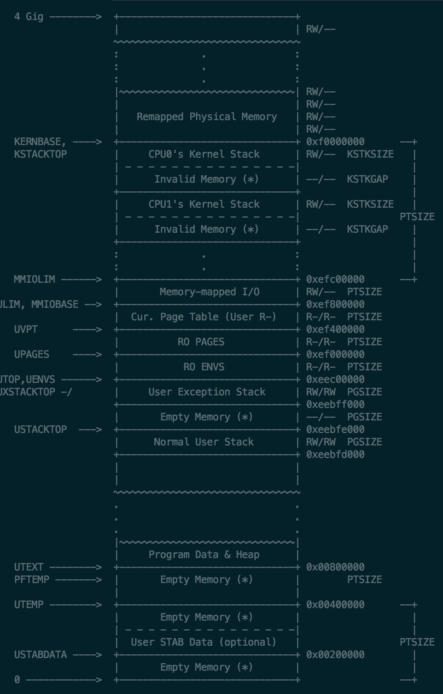

继续开始Lab2，这部分内容可以回忆以前的CSAPP的malloc lab.
Introduction
这个实验要实现内存管理。内存管理有两个部分，第一部分是给内核分配物理内存，内存分配是以4096 bytes为一个单位，也就是页。第二部分是虚拟内存的管理，关于物理内存和虚拟内存的映射。
Lab 2 添加了以下文件:
- inc/memlayout.h
- kern/pmap.c
- kern/pmap.h
- kern/kclock.h
- kern/kclock.c
memlayout.h 描述了虚拟地址空间的结构，通过修改pmap.c. memlayout.h 和 pmap.h
来实现PageInfo结构，这个是为了记录哪些物理内存的page是空闲的。kclock.c 和 kclock.h 管理PC的时钟和CMOS RAM硬件，这个设备记录了物理内存的数量。pmap.c需要读这个设备来确定内存大小。
Part 1: Physical Page Management
物理页管理
操作系统需要记录物理RAM哪部分是空闲的哪部分在用。JOS使用page granularity来管理物理内存，因此可是用MMU来映射和保护每一块分配的内存。
以下内容要配上 inc/memlayout.h 的图。

Exercise 1
实现kern/pmap.c中的函数.
- boot_alloc()
- mem_init() (only up to the call to check_page_free_list(1))
- page_init()
- page_alloc()
- page_free()
首先看通过查看 mem_init 函数可以知道，boot_alloc 是用来初始化页目录(page directory)。在 boot_alloc 中，nextfree 为下一个空闲内存的虚拟内存地址，当 nextfree 为空时会先初始化。用到了ROUNDUP，这个ROUNDUP在 /inc/types.h 中，因为内存区块是对齐的，所以每块都是固定的大小。npages 是页数量，可使用的内存大小是 npages × PGSIZE ，根据lab1提到的，KERNBASE是分配内存的起始地址，若nextfree 大于 KERNBASE + npages × PGSIZE 的值，就是指针地址溢出了。
所以只需要添加上这部分代码。
1 2 3 4 5
| result = nextfree; nextfree = ROUNDUP(nextfree+n, PGSIZE); if((uint32_t)nextfree > KERNBASE + (npages * PGSIZE)) { panic("Out of memory!\n"); }
|
mem_init 在执行完上面的函数以后，会给kern_pgdir加上权限位。
之后就是要初始化所有的struct PageInfo 为 0。首先确定PageInfo的大小，然后用boot_alloc分配内存，接着用memset初始化。
1 2 3
| size_t PageInfo_size = sizeof(struct PageInfo); pages = (struct PageInfo *)boot_alloc(npages * PageInfo_size); memset(pages, 0, npages * PageInfo_size);
|
接着调用page_init()来初始化page结构和内存空闲链表。
参考注释，一步步修改就可以了。
1 2 3 4 5 6 7 8 9 10 11 12 13 14 15 16 17 18 19 20 21 22 23 24 25 26 27 28 29 30 31 32 33 34 35 36 37 38 39 40 41 42 43 44 45 46 47
| void page_init(void) { size_t i; page_free_list = NULL; for (i = 0; i < npages; i++) { if (i == 0) { pages[i].pp_ref = 1; } else if (i < npages_basemem * PGSIZE){ pages[i].pp_ref = 0; pages[i].pp_link = page_free_list; page_free_list = &pages[i]; } else if (i >= IOPHYSMEM/PGSIZE && i < EXTPHYSMEM/PGSIZE) { pages[i].pp_ref = 1; } else if (i >= EXTPHYSMEM/PGSIZE && i < PADDR(boot_alloc(0))/PGSIZE){ pages[i].pp_ref = 0; pages[i].pp_link = page_free_list; page_free_list = &pages[i]; } else { pages[i].pp_ref = 0; pages[i].pp_link = page_free_list; page_free_list = &pages[i]; } } }
|
之后需要实现page_alloc函数。这个函数是为了分配一个物理页， 返回对应的结构体。
1 2 3 4 5 6 7 8 9 10 11 12 13 14 15 16 17 18
| struct PageInfo * page_alloc(int alloc_flags) { struct PageInfo result; if (!page_free_list) return NULL; result = page_free_list; page_free_list = page_free_list->pp_link; result->pp_link = NULL; if (alloc_flags & ALLOC_ZERO) { memset(page2kva(result), 0, PGSIZE); } return result; }
|
最后是实现page_free。
1 2 3 4 5 6 7 8 9 10 11 12
| void page_free(struct PageInfo *pp) { assert(pp->pp_ref == 0); assert(pp->pp_link == NULL); pp->pp_link = page_free_list; page_free_list = pp; }
|
参考资料
MIT 6.828 JOS 操作系统学习笔记